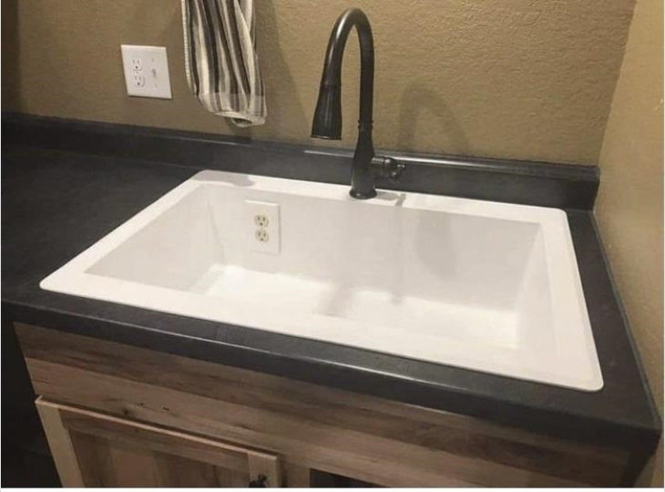
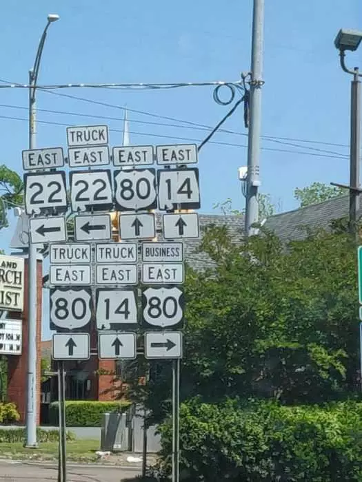

Design & User Experience


But … I’m not a Web Designer?
- Wealth of packages available in the Shiny ecosystem
- Plug-in favorite theme styles
- Ability to go as low-level as desired with CSS and JavaScript
💡 It’s not all about you! (That’s good)
Language of the Web
Shiny
dept_choices <- c("Ancient Near Easter Art", "American")
selectInput(
"dept",
"Select Department",
choices = dept_choices
)HTML
<div class="form-group shiny-input-container">
<label class="control-label" id="dept-label" for="dept">
Select Department
</label>
<div>
<select id="dept" class="form-control">
<option value="Ancient Near Easter Art" selected>Ancient Near Easter Art</option>
<option value="American">American</option>
</select>
</div>
</div>Multiple Levels of Abstraction
{shiny}
fluidRow(){htmltools}
div(class="row", ...)Raw HTML
<div class="row">...</div>Empowers users across spectrum of design experience
Cascading Style Sheets (CSS)
Set of rules that define how HTML content is presented in the browser
selector {
property1: value;
property2: value;
}- selector defines which elements on page to apply rule
- property list set properties of elements to specific values
Customizing CSS in Shiny (1)
ui <- fluidPage(
tags$head(
tags$style(
HTML("
body {
background-color: blue;
color: white;
}")
)
),
# application UI
...
)tagsoriginates from{htmltools}, but imported with{shiny}
Customizing CSS in Shiny (2)
# app.R
ui <- fluidPage(
tags$head(
tags$link(
rel = "stylesheet",
type = "text/css",
href = "custom.css"
)
)
)/* www/custom.css */
body {
background-color: blue;
color: white;
}Customizing CSS in Shiny (3)
ui <- fluidPage(
h2(
"Art Viewer Application",
style = "font-family: monospace;"
),
...
)Code-Along
Streamline the design of {simclindata.shiny} with a pinch of customization